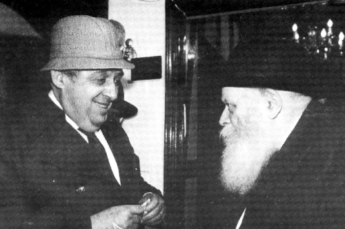

Behind Closed Doors with the Rebbe
When will the Rebbe move to Eretz Yisroel? * In an interview with Beis Moshiach, Mr. Moshe Ishon, editor of HaTzofeh for twenty years, tells of his many visits to 770 and about his private meetings with the Rebbe, the first of which lasted over three hours. * “I was captivated by the Rebbe’s persona

“Our conversation with the Admur took place when he celebrated his 70th birthday,” is how Mr. Moshe Ishon began his description of the meetings he had with the Rebbe for B’Machane. “It was a particularly special day. Everything looked festive. Guests came from all over the world. The Admur’s house was too small to contain them all, but the Chassidim managed. You won’t find a Chassid who says it’s too crowded for him. They crammed together and waited in the large beis midrash for hours for the Rebbe’s arrival at the farbrengen.
“They stood on the window sills; they hung from the beams. They climbed on one another’s shoulders in order to catch a glimpse of the Rebbe on his birthday. The Rebbe walked into the beis midrash in measured strides and went up to the elevated platform. He took a seat at the head of the table, raised his cup for l’chaim and the crowd of thousands burst into mighty song, a new niggun that was composed especially in honor of the Rebbe’s birthday. The words were from T’hillim, Chapter 71, to correspond to the start of his 71st year.
“‘Becha Hashem chassissi, al eivosha l’olam,’ they sang repeatedly with d’veikus and a quick tempo. The Rebbe listened, sang, and occasionally, with a motion of his hand, a motion that indicated speed, upped the tempo.
“Thousands came to farbreng. Hundreds came to bless the Rebbe personally. Politicians came, special emissaries came, among them was the writer Herman Wouk who conveyed greetings from the President of the United States, Richard Nixon. There was also the Israeli ambassador to the US, Yitzchak Rabin, who brought greetings to the Rebbe on behalf of the Israeli government. Representatives of Mayor Lindsey came and presented an honorary certificate to the Rebbe from the City of New York. The Rebbe received everyone graciously. He thanked each one of them. He also received thousands of gifts from all over the world, including an album with the signatures of most of the ministers of the Israeli government and all the ‘Who’s Who’ of the State of Israel.”
***
Moshe Ishon had a warm relationship with the Rebbe. He wrote letters to the Rebbe and received dozens of letters in return. Whenever he was in New York, he visited 770, whether for a farbrengen or a long private audience. The relationship grew stronger during the three years of his mission in New York from 1977-1980, as a representative of the Jewish Agency. During this period, Ishon did not miss a single farbrengen with the Rebbe!
Those years were the height of the Rebbe’s battle over amending the law of “Who Is A Jew.” The Rebbe demanded that religious Knesset members and ministers work on amending the law. Representatives of Mafdal (the Mizrachi party) in the Knesset and the government did nothing to amend the law, nor did they agree to leave the government as the Rebbe demanded they do. In sichos of those days, the Rebbe stated the obligation of the religious representatives to take action. Lubavitchers in Eretz Yisroel worked assiduously to amend the law while leveling sharp criticism at the representatives from Mafdal and Agudath Israel. Relations between Chabad and Mafdal representatives were strained and even grew tense.
At that time, during the summer of 1970, Moshe Ishon, a senior journalist (later the editor) from HaTzofeh, came to New York. He attended the Rebbe’s farbrengens and had yechidus. His first yechidus lasted over three hours, with Mihu Yehudi as the main topic. Ishon wrote up the yechidus for HaTzofeh without taking into consideration what the leadership of Mafdal would say.
The reason for his close relationship with the Rebbe at a time when the Mafdal leadership was getting it over the head from the Rebbe was explained in an interview that Beis Moshiach conducted with him.
“The Rebbe’s personality and outlook impressed me tremendously. That is why I went to 770 at every possible opportunity, in order to hear the Rebbe’s opinion and take counsel with him. Although I worked for HaTzofeh, I personally am a big admirer of the Rebbe. This is why I often wrote my opinion about Mihu Yehudi and about Eretz Yisroel HaShleima in the spirit of the Rebbe’s sichos even though this opposed the views of the leadership of Mafdal.”
When meeting personally with the Rebbe, you spoke to him, but what does a man of Mafdal do for dozens of hours at farbrengens?
“I’ll tell you; it’s very simple. Just looking at the Rebbe does a lot.”
As a journalist for HaTzofeh, Ishon was sent on special missions by the Israeli Foreign Ministry to the US. As part of his missions he visited many public figures, including rabbis. That is how he reached the Rebbe.
His first encounter was at a farbrengen in the summer of 5730:
“I stood there, one of thousands packed into the room with their gaze upon the table at which the Rebbe sat and spoke. The farbrengen lasted for hours and included Chabad niggunim and the drinking of l’chaim. People did not drink until they made eye contact with the Rebbe.”
It was the first time and Ishon was captivated. This first encounter led to another encounter a short while later, this time in a yechidus that lasted over three hours. This is how he described that first yechidus in an article that he published afterward:
The Rebbe stood in his office impeccably dressed. His noble features were framed by a beard shot through with gray. His burning eyes threw off great light. His caressing hand responded to our ‘Shalom Aleichem,’ and within seconds we found ourselves next to his glass covered desk with his image reflected in it like a mirror. On the edge of the desk was a large clock alongside a bell. One of the secretaries told me that when it rang, I was to end the yechidus.
The conversation began with information, “Where are you from?” Then the Rebbe explained the Gemara in Eruvin about why Rebbi (Rabbi Yehuda HaNasi) gave honor to wealthy men. He emphasized that “it does not refer to the simple meaning of ‘wealthy,’ but to those ‘wealthy’ in influence, who have the power to take action and those who use their wealth towards positive ends according to the Torah perspective. These are the ones Rebbi honored. The definition of poor people is those who have the ability to do, but they don’t take action. They are punished more than those who lack the means to take action.
“Chabad,” emphasized the Rebbe as he continued, “champions’ action. If we value the impact of speech, all the more so do we value the impact of that which is in writing.”
Said Ishon, “It was an introduction to the main topic of the discussion, Mihu Yehudi. The Rebbe’s request was that we not divert our attention from the main issue by discussing other matters, albeit important in their own right but of lesser value according to the Rebbe when compared to the big topic: Shleimus Ha’Am.”
Indeed, the amendment of the law of Mihu Yehudi was the central topic of this yechidus as well as in later private audiences that Ishon had with the Rebbe. The Rebbe asked him as a journalist to influence, by writing and other ways, those who had the ability to help amend the law so that only halachic conversions would be considered conversions. The Rebbe said:
“I have heard of instances when top doctors conclude that they must amputate a person’s arm, leg, eye, ear etc. in order to save his life. I have never heard a doctor suggest cutting off a person’s head in order to save his body. The State of Israel has made peace with the idea of a ‘head amputation’ in the false hope of being able to save a hand or foot, without considering that without a head, the body dies.”
“Therefore,” said Ishon, “the Rebbe is unwilling to accept the view of those who think that we should not belittle the achievements the religious have made in the areas of education, Shabbos, rabbanus, and the position of the rabbinic courts in Israel: ‘If religious education is undermined today, there is hope that tomorrow or the day after we will be able, with Hashem’s help, to overcome the problems and restore the crown of chinuch to what it used to be; if today, many desecrate the Shabbos, there is hope that in the future this will diminish. But if goyim integrate into the Jewish People, we will never be able to fix this.
“‘Years ago, Ben Gurion tried to veer off the path and some time later, the law was amended and all was well. Why don’t they do the same thing today?’ he asked, although the Rebbe did not believe that the religious ministers would change their minds and bring down the governing coalition.”
“If so,” I asked the Rebbe, “why doesn’t the Rebbe give up?”
This is what the Rebbe replied: “Even when a Jew knows that it is possible that they won’t listen to him, and as it says in the Gemara, ‘You may know for a certainty – but who says it is certain to them?’ Even when attempts at rebuke have been made and they have not been effective, the Halacha is: ‘You shall surely rebuke your fellow – even one hundred times.’ This means that after rebuking him ninety-nine times, and doing so according to all the parameters demanded by Torah, and nothing was accomplished, if he does not rebuke the hundredth time, he is transgressing a positive mitzva of the Torah. ‘You shall surely rebuke’ means that a Jew must do his part without calculating how effective he will be, especially if there is reason to think that his silence will be interpreted improperly. He has no choice, and whether it’s a way of pleasantness or not he must say his piece.”
Shortly after this article by Ishon was printed in HaTzofeh, he received a letter from the Rebbe in which the Rebbe corrected how he was quoted regarding the statement of Chazal, “Rebbi gave honor to wealthy people,” pointing out that the Gemara was clearly speaking about those who possess actual wealth. The reason that they are deserving of honor is that if G-d entrusted them with the resources to accomplish great things, despite the many difficult spiritual challenges that come with great wealth, they must have tremendous soul powers to withstand those tests. (Igros Kodesh Vol. 26, p. 343)
The Rebbe fought mightily to bring about legal and other changes in Eretz Yisroel. Some wondered what right he had to express views from abroad about matters pertaining to Eretz Yisroel. Ishon presented this question to the Rebbe and received this answer:
“Every Jew, no matter where he lives, has a portion and inheritance in Eretz Yisroel. This inheritance is at least a cubit by a cubit. As was said a number of times, everything has expression in halacha. Here too. Regarding a pruzbul, it says in the piskei ha’gaonim that every Jew can write one, even though one needs ownership of land to write one, because every Jew has land in Eretz Yisroel. So regarding anything that takes place in Eretz Yisroel, not only does it pertain to all the Jewish people, Klal Yisroel has the right and obligation to state its opinion about it, whether this view is taken into consideration or not.”
After a pause, the Rebbe continued:
“At first glance, it seems that a Jew can only state an opinion about his own portion which is one cubit by one cubit. But this is not so. Not only can he state an opinion, on the contrary, if he remains silent he bears the responsibility of everything that takes place there, which he knows about, without his reacting to it.”
Ishon also raised the question, “When will the Rebbe go to Eretz Yisroel?”
The Rebbe said, “The day will come. I hope it won’t be long.”
Ishon: “What about the Chassidim, are they also waiting until the Rebbe makes aliya?”
Rebbe: “Whenever a Chassid comes and asks whether to move to Eretz Yisroel, and he does not fill an important position in chinuch or rabbanus, we tell him to go, and give him blessings. The problem is with those who hold critical positions; if they leave their community, it will all fall apart. To those we say: do what a captain of a ship in stormy seas does. The captain is always the last one to leave the ship. First I have to save the passengers.”
Ishon: “Does that mean you are in favor of aliya?”
Rebbe: “We are in favor of fulfilling the mitzva of settling Eretz Yisroel. Can you find another Chassidic movement that is so involved in building the land?”
Another topic that Ishon raised in that yechidus is whether the liberal conversion laws in the State of Israel adversely affected intermarriage and Reform conversions around the world. The Rebbe responded to this strongly.
“Yes, today the situation is far worse than it was previously. First, the very fact that an Israeli law recognizes Reform conversions encourages those who seek to throw off the Yoke of Heaven. Second, many goyim – some of whom want to leave the countries behind the Iron Curtain, and some of whom seek work in Israel, who are prepared to turn into ‘instant Jews’ – make aliya and are registered as Jews with all the rights, while remaining outright goyim according to Das Moshe v’Yisroel (Jewish law).”
During the conversation, the Rebbe said that he knew of at least 250 or so goyim who went to Israel via Vienna and were registered as Jews without any conversion. Likewise, hundreds of goyim from American countries, mainly South America, went to Israel without converting according to halacha.
The Rebbe went on to compare the war to amend the law to the war with the Arab enemy:
“The question here is not whether one family or another converted or will convert according to halacha or not. The problem is more fundamental: A few years down the road, will the Jews remain a Jewish nation or will there be a joining of masses of non-Jews? This then, is an existential war, for the existence of the nation is in danger if they bring in hundreds of Tzidoni, Moabite families etc.
“Just as it is necessary to fight the Arabs when they force an existential war upon us, so it is spiritually. When there is a danger to the existence of the Jewish people, there is no other way than to fight until the danger disappears.”
What is war? “War,” said Ishon, explaining what the Rebbe told him, “means the resignation of the religious ministers from the government, a Parliamentary battle, enlisting public opinion for the emendation of the law, etc.”
The Rebbe disclosed that he had received letters from “there” [referring to the Soviet Union] which showed how the law of Mihu Yehudi also affected the future and the existence of Soviet Jewry.
The Rebbe said, “A Jew from ‘there’ wrote me, ‘We knew that a Jew is someone whom the holy Torah establishes as a Jew. We were careful about mixed marriages. Even our sons and daughters who went to dance on Simchas Torah near the big shul in Moscow [ed. This was the only religious event that the communists allowed young people to participate in] knew that in order not to be cut off from the Jewish people, they must marry within their nation. However, since in Israel there is a weakening of the Jewish spirit … although the battle continues and Jews make aliya, they bring goyim along with them, some of whom are registered as Jews.’”
The Rebbe gave another example of a Jewish woman in the Soviet Union who was married to a goy and before she made aliya, she separated from him. He understood her motives. Now, she is in Eretz Yisroel and some time ago she received a letter from her friend in Russia, “You fool. Why did you leave the goy? In Israel you can register goyim as Jews.”
In this yechidus, the Rebbe related a conversation that he had with the Interior Minister, Yosef Burg of Mafdal. “I have no personal complaints against religious ministers as individuals. They are observant of Torah and mitzvos. Dr. Burg was here. I spoke to him about this subject. He is a learned man. He can quote Gemaras and complete a quote from a Gemara, but I do not agree with his approach. I explained my view to him. I don’t know how he will act. This merely tells us that if the religious community continues to act weakly regarding Mihu Yehudi, they will treat them disparagingly in other matters too such as rabbanus, Shabbos, chinuch.”
Ishon dared to say that the religious-nationalist community did not appreciate attacks from Chabad. “Sometimes, these attacks offend an entire community.”
The Rebbe’s response was, “There are things that are interpreted incorrectly. I have already explained why Rebbi gave honor to the wealthy. We too, knowing the strength of the religious ministers in the government, have complaints against them about their inaction. However, we never attacked them personally, all the more so, a community of believing Jews.”
The Rebbe expressed his amazement that the law was not amended. “When it comes to Mihu Yehudi, there is no issue of religious coercion; on the contrary, it is they who want to force the Jewish nation to accept goyim, so by right they should agree with the religious community. The government is avoiding amending the laws only because the religious ministers are not pressuring them enough.”
The Rebbe directed tough questions towards the government’s Attorney General for not undertaking proper legal measures regarding goyim registered as Jews without any conversion whatsoever. “Why doesn’t the Attorney General investigate how hundreds of goyim are registered automatically as Jews? Would they act similarly with other transgressions of the law?”
***
“The hands of the clock showed that it was past two in the morning. The bell in the Rebbe’s room rang twice, three times. It was a signal to hurry up, but each time it rang, the Rebbe said, ‘Sit, sit; don’t rush.’
“At nearly 2:30, over three hours had passed since the beginning of the yechidus. We parted from the Rebbe as he escorted us with a bracha on the way to the door.
“In the hallway were some elder Chassidim who waited patiently to have yechidus with the Rebbe. Yeshiva bachurim pounced on us to hear what the Rebbe said. They took us to the ‘operations room’ of Chabad. On the wall were telephones, with the country that it was connected to written next to each device. We read: Israel, England, Australia, New Zealand, France, and South Africa – six countries on four continents with whom the Rebbe’s headquarters kept in direct contact via these machines. The Rebbe’s farbrengens were transmitted by direct phone hookup. In the secretaries’ room, spread out on the shelves, were hundreds of booklets about Mihu Yehudi, Likkutei Sichos in three-four languages, Siddurim, records of niggunim, and an archive of letters and newspapers that testified to the spreading of the Chabad wellsprings outward.”
Ishon ended his description of his first yechidus with a comparison between his visit to 770 and New York in general:
“We left the Rebbe’s building. On the pavement near the building, a few Chassidim walked back and forth like soldiers on guard. This is what they do every evening. As long as the Rebbe is awake, they do not sleep.
“Our friend started the car and headed for Queens. Within 100-200 meters we felt a change in the atmosphere. We could feel the abrupt transition from 770 Eastern Parkway, a building which is part of the ‘New York of Above,’ to the illuminated bridges which connect Brooklyn and Manhattan. Despite the sea of lights illuminating them, great is the darkness which characterizes “New York below.’”
***
Less than two years passed before Ishon returned to visit 770. This time it was to attend the Yud-Alef Nissan farbrengen marking the Rebbe’s 70th birthday. It was 11 Nissan, 5732/1972. Numerous and distinguished guests attended this celebration in order to express their esteem for the Rebbe. Lubavitcher friends of Ishon suggested that he go too and he did.
He wrote a description of that farbrengen for the military paper BaMachaneh eight months later, on 3 Cheshvan 5733 which we quoted at the beginning of this article. The Rebbe read it and enjoyed it very much. We know this from a letter that the Rebbe wrote to him on Chanuka 5733 in which he thanks him for the article and says that the main thing is that Ishon used his talents for those things that inspire Yiras Shamayim.
In 5737, Ishon took a leave of absence from his job at HaTzofeh and went to New York as a representative of the Jewish Agency.
“At the first farbrengen that took place after Rosh Chodesh Kislev [5738, following the Rebbe’s heart attack], R’ Groner sent me a bachur to take me to the farbrengen. I sat behind the Rebbe. At the end of the farbrengen, when the Rebbe left, he extended his hand to me and spoke to me about my purpose for being in New York. Since then, during the three years that I was in New York, I attended every farbrengen. Whenever I visit New York, I go to the Rebbe, whether for a farbrengen, a yechidus, or for dollars and a bracha.
“I can say that during my stay in New York, from 1977 and on, I did not miss a single farbrengen. I sat behind the Rebbe at every farbrengen. Sometimes, my oldest son, who was a young boy at the time, sat with me and sometimes he sat with the crowd. My wife came with me a few times. At the end of the farbrengens, the Rebbe would stop near me and smile.
“During my yechiduyos, which were not short, the Rebbe spoke to me a lot about the importance of hiskashrus and he explained things having to do with spreading the wellsprings outward. The Rebbe also spoke to me about timely matters such as Mihu Yehudi and Shleimus Ha’Aretz. In the articles that I wrote as a commentator and editor, I always wrote in accordance with the Rebbe’s views even though these contradicted the views of the leaders of Mafdal.”
Ishon was the editor of HaTzofeh, the newspaper of the Mizrachi and Mafdal movement, for close to two decades. Before taking the job, he had an offer for a different job. He presented his thoughts to the Rebbe:
“It was after Tisha B’Av 1980. I had finished my work for the Jewish Agency in New York and I had an offer to work in a senior position for the Agency. I was also offered the position of editor of HaTzofeh. I was very uncertain as to how to make a decision. In a yechidus that lasted two hours, I presented all my doubts to the Rebbe. The Rebbe analyzed it all and told me to take the editing job, which I have been doing now for nearly twenty years.”
Ishon’s last encounter with the Rebbe was when the Rebbe gave out dollars for tz’daka on 12 Adar I 5752.
***
We began this article with Ishon’s description of the big farbrengen that took place on 11 Nissan 5732, over forty years ago, and we will end with another excerpt from that article:
“In honor of the Rebbe’s 70th birthday, the New York Times devoted an entire spread to profile the Rebbe. One of the editors of the paper went to 770. One of the questions he asked the Rebbe was, “Who is to be the eighth Lubavitcher rabbi?’
“‘The Messiah will come and he will rid us of all these troubles and doubts,” replied the seventh, and added smilingly: “He could come while I am here. Why postpone his coming?”
Shneur Zalman Berger. "Behind Closed Doors with the Rebbe." Beis Moshiach, no. 844 (August 3, 2012).